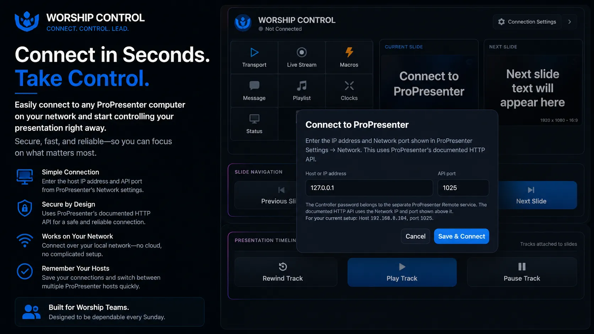

Fast Setup
Connect in seconds.
Enter the ProPresenter host IP address and API port, save the connection, and start controlling your presentation right away.
✓Uses ProPresenter's documented HTTP API
✓Local network connection with no cloud dependency
✓Designed for fast reconnects and dependable use
